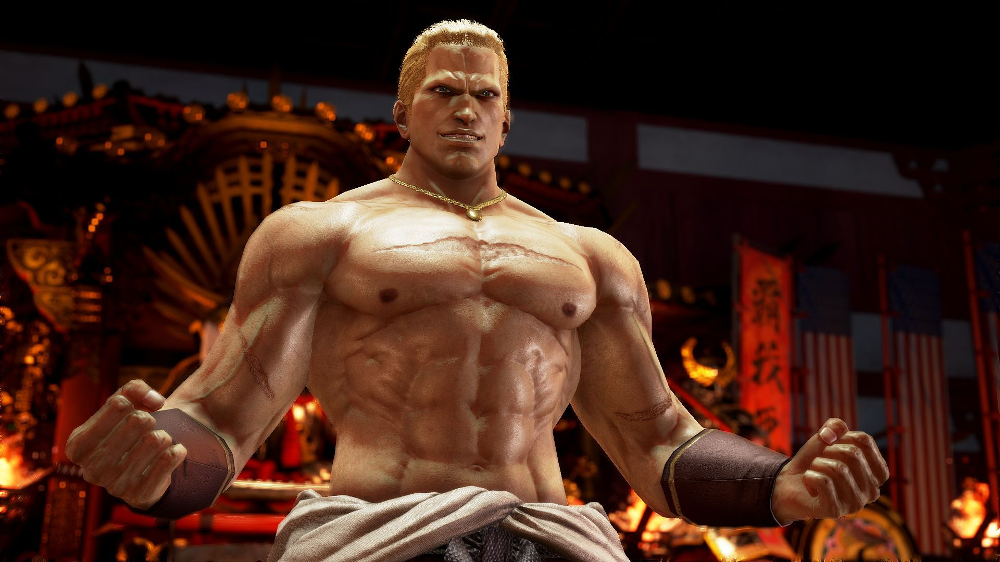
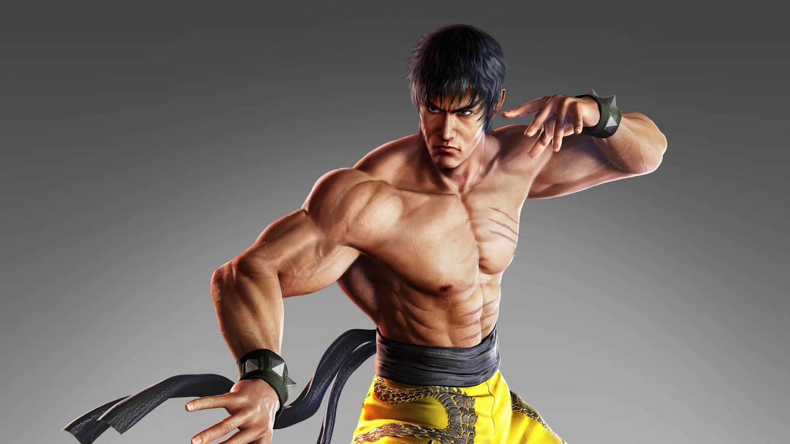

*****TEKKEN 7*****
COMBATIENTES
FAHKUMRAM

Fahkumram es un luchador brutal de Muay Thai que es en gran parte estoico y no parece disfrutar mucho hablando. A pesar de su apariencia intimidante, parece poseer un comportamiento aparentemente humilde, y una de sus intros le pregunta a su oponente por qué están luchando
LEROY SMITH

El maestro de wing chun leroy smith se une a la lucha Hace aproximadamente medio siglo la ciudad de nueva york que estaba plagada de bandas cuyos miembros se contaban por cientos de miles en aquella época un joven llamado leroy smith perdió a toda su familia por los actos violentos pasaron muchos años Al final el suceso que vivió en nueva york pasó a la historia como una guerra de la gran manzana y 50 años después las bandas aunque ya debilitadas seguían controlando gran parte de la ciudad por este motivo leroy Decidió volver a nueva york para vengar a su familia y liberar a su ciudad de yugo del miedo y la violencia
GANRYU
Ganryo necesitaba publicitar desesperadamente a su restaurante, chanco paradise, y por eso se decidió a participar en el torneo del rey del puño de hierro 6 como resultado la Popularidad de chanco paradise subió como la espuma Julia chang había empezado una campaña de micromecenazgo para su programa de reforestación y estaba buscando apoyo ganryo decidió ayudar a su querida Julia No dudó En apoyar la campaña aunque con tanta euforia acabo donando por error todos los beneficios del restaurante a la causa fue entonces cuando se enteró de que hey hachi mishima iba a celebrar el torneo del rey del puño de hierro una vez más ganryo decidió volver a ponerse su extravagante Atuendo y competir en el torneo para captar la atención del público e incrementar su número de suscriptores además aprovecharía el premio en metálico para solventar sus problemas económicos
CLAUDIO
Claudio Los tiradores de sirius Una sociedad secreta de exorcistas han tenido mucha influencia en la historia europea durante cientos de años el exorcista más poderoso de la generación actual se llama claudio y acudió a mishima zaibatsu para que sus grupos unirse a fuerza si acabas en concierto mal después de compartir mi información sobre los objetivos(Kazuya mishima y jin kazama), Claudio salió de la sala de control para enfrentarse a una chiquilla cuando iba a llamar a los guardias está le pidió que lo llevará Adónde estuviese jean fue entonces cuando claudio empezó a maquinar un plan en la condujo hacia la azotea y con una sonrisa maquiavélica se preparó para enfrentarse a ella.
ZAFINA

zafina nació en una familia de exorcistas y la educaron como luchadora desde joven su misión es acabar con jin kazama y kazuya mishima a los que se supone los responsables del inminente fin del mundo
NEGAN

Negan el carismático villano de the walking dead y líder de los salvadores se une a la lucha junto a lucille y le castiga aquellos que pretenden alterar su nuevo orden mundial
JULIA CHANG
Julia chang principal portavoz de su gran programa de repoblación forestal se une a la contienda deslumbra los rivales con su arrebatador estilo de lucha basado en Xin Yi Liu He Quan y Bajo Quan
ARMOR KING

Un luchador misterioso que lleva una armadura de acero y una máscara negra de jaguar se creía que había muerto en una pelea de bar contra craig marduk pero ha vuelto para Luchar otra vez nadie conoce su auténtica identidad
CRAIG MARDUK

Craig marduk fue un luchador de vale tudo invicto desde su debut hasta que fue expulsado por el comité por su participación en un escándalo tras verse envuelto en una pelea de barney mato por accidente a armor king que intentaba mediar en la situación craig combatió contra king el discípulo de armor king dos veces después de aquello hasta que se hicieron amigos
LEI
Es un detective de la interpol de hong kong y un maestro de las artes marciales chinas sigue investigando la mishima zaibatsu que son la causa de los altercados por todo el mundo aunque al lei lo conocen como un súper policía en ocasiones puede ser un poco descuidado
ANNA
Ana pertenecía a una familia de asesinos de Niña le enseñaron junto a su hermana nina los fundamentos del asesinato pero la favorita de su padre siempre fue nina por lo que los celos de ana se convirtieron en un gran resentimiento hacia su hermana a lo largo de los años su rivalidad se ha intensificado sería capaz de dispararle un misil a nina sin pensárselo dos veces
NOCTIS

Noctis el 114 heredero al trono de luz y se une A la batalla desde final fantasy 15 Experimenta un nuevo nivel de combate con la habilidad de teletransportarse cerca de tu enemigo e invocar el poder de los reyes de antaño con el coro espectral
GEESE
geese howard el carismático rostro del mal de snk se une al combate sé testigo de la Sobrecogedora presencia del último antagonista en sumarse a tekken 7
SHADEEN

shadeen Trabaja para una empresa privada militar especializada en proporcionar servicios de seguridad durante su tiempo en el ejército se labró un nombre como experto en combate uno contra uno un día su amigo y dueño de una compañía relacionada con el petróleo murió repentinamente y en extrañas circunstancias la autopsia Declaró que la muerte había sido accidental Pero él sospecho que había gato encerrado cuando el equipo de gestión (todos los miembros de la familia) renunció la corporación g adquirió la compañía de su amigo
KATARINA

Katarina alves perdió a sus padres de pequeña y pasó varios años en un orfanato antes de ser adoptada por un hombre al que no conocía al principio catarina se rebelaba contra el hablándole de manera inapropiada pero fue cediendo poco a poco gracias a la amabilidad y paciencia de ese hombre con el tiempo se hicieron íntimos pero a la tendencia de catarina por el lenguaje soez nunca desapareció un día su padre adoptivo se esfumó, aunque su deseo era encontrarlo no disponía de los medios económicos suficientes fue entonces cuando se enteró del torneo del rey del puño de hierro
AKUMA
Akuma Un luchador misterioso un demonio se encuentra en medio de la disputa de sangre de mishima por una relación preexistente con kazumi la esposa de hehiachi hace su debut en tekken 7 prometiendo cumplir con una deuda con kazumi
ELIZA

Eliza En principio eliza iba echarse una breve siesta pero al final acabó por dormir 600 años al despertar se descubrió que sus poderes vampíricos se habían esfumado así que para intentar recuperar la fuerza que una vez tuvo decidió hacerse con la sangre de varias víctimas Sin embargo esto no fue suficiente lo que necesitaba era la sangre de alguien con mucha fuerza espiritual para que si volviese a estar en plena forma pero ¿existía alguien así en esta era? no tenía ninguna pista como último recurso decidió dirigirse a la antigua sede del clan el de exorcistas que tantos dolores de cabeza la habían causado cuando merodeaba por las noches quizá algunos de sus descendientes aún siguiera con vida
LUCKY CHLOE

Lucky chloe es una celebridad pop y el rostro de la corporación g cuando un hombre misterioso Irrumpió en la corporación g y acabó con todos los guardias con técnicas inspiradas en el baile lucky chloe se dirigió hacia él sin pensárselo y le bloqueó el paso lanzando una de sus características sonrisas le propuso un reto un combate si el perdía tendría que trabajar como su bailarín de apoyo antes de cerciorarse si aceptaba las condiciones o no se preparó para la batalla
KAZUMI
Kazumi mishima esposa de heihachi mishima conoce bien el karate hachijyo era amiga de la infancia de su esposo fíjate hasta que finalmente se enamoraron a través de su amor dieron a luz a un niño sano y joven
JOSIE

josie rizal hizo de todo para ayudar a su familia compatibilizando sus dos trabajos uno como modelo y otro como luchadora de kickboxing profesional un día mientras corría modo de entrenamiento por senderos de montaña una criatura norma y peluda la atacó josie grito y después huyó con lágrimas en los ojos pero la criatura le pisaba los talones al darse cuenta de que no había escapatoria josie se detuvo en seco y se dio vuelta dispuesta a enfrentarse a sus feroz rival
GIGAS
Una de las divisiones bélicas de la corporación se inscribió a gigas su última arma biológica en el torneo del rey del puño de hierro por dos razones para comprobar la fuerza de su arma humanoide de última generación contra un arma similar de la corporación g y para provocar heihachi mishima irónicamente la primera batalla se iba a realizar en la azotea de la torre milenium Propiedad de la corporación g probablemente a modo de represalia por ofender a heihachi o impasible ante la belleza de las rascacielos al amanecer gigas esperaba a su víctima
DEVIL JIN

Es la forma de jin cuando el gen diabólico lo posee aunque parece humano su alma no lo es todo lo que puede hacer es matar y destruir ya que sus instintos lo gobiernan
PANDA
Panda Una oso panda que acompañó a xiaoyu a japón fue entrenada por el propio heihachi mishima para que fuese una guardaespaldas apropiada para xiaoyu, kuma está enamorado de ella pero ella no está interesada en él
KUMA

Kuma Es la mascota de heihachi mishima y su guardaespaldas personal considera a paul phoenix su rival ambos han librado muchos enconados combates kuma es más listo que la mayoría de los osos y es capaz de entender a los humanos e incluso de amar
STEVE
Steven es un campeón de boxeo internacional lo crearon de forma artificial en el centro de investigación de la mishima zaibatsu se entrena junto a paúl y marshall
LEE
Lee es un mujeriego increíblemente presumido y engreído con un inmenso sentido de clase, sin miedo a hacer alarde de su riqueza. Aunque excéntrico hasta el punto de la feminidad y tan intrigante como su padre adoptivo, Lee es en última instancia bondadoso y tiene un gran desprecio hacia Kazuya y Heihachi.
PAUL

Paul es un individuo extremadamente confiado que nunca duda de sí mismo. Sin embargo, esto tiende a sacar lo mejor de él, debido a que su ego se sale de control y termina en situaciones difíciles e incomodas. A pesar de esto, su actitud no ha cambiado a lo largo de los años y todavía se esfuerza en convertirse en el mejor en el universo. Siempre ha sido retratado como de corto temperamento aunque de buen corazón, un poco de pocas luces, impetuoso, fuerte y totalmente presuntuoso. Considera a Kazuya Mishima como su rival, pero Kazuya tiende a verlo como algo más que una molestia a lo sumo. Comparte una profunda amistad con Marshall Law pesar de las disputas constantes de ellos dos, Law es generalmente visto como mentor o consejero de Paul.
LAW
Law Marshall suele llevarse bien con sus amigos y familiares. Marshall ha sido amigo de Paul Phoenix desde Tekken 1 y se ha mostrado no solo a amigos, sino también a compañeros de lucha. Marshall también se llevaba bien con Steve Fox cuando se unieron en Tekken 6. A Law también le gusta bromear o burlarse de sus amigos. Por ejemplo, en su final de Tekken 6, Marshall pone laxantes en su pizza de receta especial y se la da a Paul y Steve. Además, a Marshall también le gusta burlarse de la incapacidad de Paul para realizar una patada de salto mortal a veces. También se demuestra que Marshall Law es un muy buen profesor de artes marciales. Le ha enseñado muy bien a su hijo y, en algunos casos, Forest realizó movimientos que su padre no pudo. Marshall también le enseñó a Lee Chaolan algunos de sus movimientos antes de los eventos de Tekken 1. También se ha demostrado que Law se preocupa profundamente no solo por su familia, sino también por sus estudiantes del dojo. Después de descubrir que Baek Doo San atacó a sus estudiantes, iría a buscar a Baek y vengaría con éxito a sus estudiantes.
JACK-7

JACK-7 Habiendo sido construido como una máquina de matar destructiva, los robots Jack son muy agresivos y no dudan en destruir todo lo que tienen a la vista. Sin embargo, los robots Jack también son capaces de mostrar empatía y compasión, como lo demuestra la reacción de Jack-2 al encontrar a Jane, y parecen ser muy protectores con aquellos con quienes comparten un vínculo cercano, incluso llegando al punto de sacrificarse, como demostrado por Gun Jack en su historia de Tekken 3. La personalidad de Jack-6 se explora un poco más cuando juega como él en la Campaña de escenarios en Tekken 6, donde expresa su amor por la lucha, oponentes fuertes y compañeros robots, y, aunque está programado para comprender palabras más largas como biológicos (su nombre para humanos), generalmente tiene una forma muy infantil de pensar y hablar, no entiende mucho de lo que los otros luchadores le están diciendo y etiqueta cualquier cosa desconocida o desconocida como mala .
YOSHIMITSU

Yoshimitsu La benevolencia de Yoshimitsu no ha cambiado desde el primer Torneo de Tekken. Le gusta ayudar a las personas que lo necesitan, como se ve con Law y su familia (el final de Yoshimitsu) en Tekken. También se convirtió en el ayudante del Dr. Bosconovitch antes de la traición de Bryan hacia el clan Manji en Tekken 5.
BRYAN

Bryan es brutal, insensible y psicótico en general. A lo largo de toda la saga Tekken, está claro que la motivación de Bryan es nada más que crear estragos y miseria donde quiera que vaya. Su egoísmo se ha demostrado varias veces; como cuando traicionó al Doctor Bosconovitch y a Yoshimitsu muy poco después de que Yoshimitsu lo salvó de su propia muerte. Bryan apenas habla y por lo general expresa su deleite en ver a otros sufriendo a través de una risa maniaca y sonrisas sadicas.
FENG
Feng Un artista marcial despiadado y despiadado. Feng tiene ansias de poder y lucha, lo que puede verse como una fuerza y una debilidad, ya que si bien era lo suficientemente hábil como para ser el mejor de su clase, su mayor defecto es que su adicción y su impulso impulsivo de comenzar a pelear finalmente consiguieron el mejor de él, lo que le hizo asesinar a su maestro después de que lo regañó por pelear fuera del dojo. Busca convertirse en el luchador más fuerte del mundo, y no teme mostrar todo su poder contra cualquier oponente que se interponga en su camino, y ha destruido muchos dojos y herido a muchos inocentes a su paso para obtener lo que desea
ASUKA

Asuka a pesar de tener una apariencia inocente y hermosa, presenta una personalidad algo bastante temperamental, con una actitud arrogante y desafiante. Es sorprendentemente impetuosa y arrogante. Aunque en su perfil se indica que ella disputa peleas regularmente, ella parece no tener reparos en combates. En su modo historia, después de derrotar a su objetivo, Feng Wei, decide permanecer en el torneo con el fin de divertirse
DRAGUNOV

Dragunov es frío, calculador, y totalmente impasible cuando lucha contra los adversarios. Aparte de unas pocas líneas de diálogo, Dragunov apenas ha pronunciado una sola palabra en toda la saga Tekken debido a que no le gusta hablar. Esto generalmente molesta, confunde o perturba a cualquiera de los otros personajes. Sirve a su patria con la máxima diligencia y lealtad siguiendo las órdenes cuando le son administradas. También le gusta cantar como pasatiempo.
LILI
Lili parece algo egoísta y engreída, lo es. Sin embargo, al igual que su rival Asuka Kazama, que se deleita en la lucha. Esto se demuestra a lo largo de la Campaña Escenario (Scenario Campaign) si el jugador la elije a ella. En casi todos los escenarios, se muestra que ella ve a la mayoría de los combatientes como juguetes con los que jugar, y también en su escenario si el jugador utiliza a otros personaje, excepto a Lili, Asuka, Jin Kazama o Lars Alexandersson. De hecho, si se juega como Nina Williams y se ingresa en el escenario de Lili, ella describe a Lili como que tiene un tornillo suelto y una mocosa que debería estar en la cama a estas horas A pesar de esto, Lili es una persona muy cariñosa, pese a su esnobismo.
RAVEN
Raven Aparece brevemente en un flashback donde él y sus hombres encuentran el cuerpo en coma de Jin en el desierto. Se desconoce si estuvo presente en el helicóptero de la ONU que explota después de los poderes diabólicos de Jin. Más tarde, sin embargo, en el episodio del personaje de Master Raven, ella menciona cómo Raven necesita ser reentrenado, sugiriendo que al menos está vivo.
BOB
Bob es retratado como simpático y carismático con un fuerte sentido de la justicia, usualmente usando sus habilidades de lucha para ayudar a los necesitados. También es bastante engreído, apareciendo como un hablador suave y poco mujeriego. Como Bob confía plenamente en sus habilidades con su figura actual, irónicamente se siente mucho más inseguro acerca de perder peso que de ganarlo y su comportamiento se vuelve mucho menos entusiasta cuando se somete a la pérdida de peso
MIGUEL

Miguel es un personaje bastante sediento de sangre y rebelde, cuya naturaleza temeraria puede verse como su debilidad y su fuerza. Miguel es representado como un español indisciplinado con una pasión muy intensa por la lucha, que a menudo lo ponía en conflicto con otros. A pesar de haber nacido en una familia conservadora, su naturaleza salvaje y rebelde lo convirtió en la oveja negra. A pesar de su lado negativo, se demuestra que Miguel es capaz de amar, especialmente en el caso de su hermana, en quien llegó a confiar y atesorar.
LEO

Leo Según el prólogo de Anna Williams y Yoshimitsu en Tekken 7, Leo es descrito como lindo y encantador en la superficie, pero peligroso en el interior. Según el propio Yoshimitsu, Leo es un adversario magnífico, pero sin embargo frágil, tanto que el personaje puede morir asfixiado después de una pelea, ejemplificado durante la escena al final de la historia de Yoshimitsu en Tekken 7
ALISA

Alisa A diferencia de la mayoría de los robots androides, Alisa posee emociones y actúa más como un humano que un robot. Es una persona muy bondadosa. Habla de una manera educada y es sensible a los sentimientos de los demás. También puede parecer bastante infantil y semejarse a las características de Ling Xiaoyu. En la película Tekken: Blood Vengeance, se demuestra que también es muy capaz de engañar, además de ser rápida para hacer amistad con cualquiera, incluso con Panda. Y en ésta película de CGI, Alisa trata de animar a Xiaoyu diciéndole que ella puede detener la lucha entre padres e hijos de la Familia Mishima; así como en insistir en que ella le debía su vida a Xiaoyu, ya que en una ocasión la había salvado
LARS
Lars es muy musculoso, como lo demuestran sus grandes bíceps, abdominales visibles, y los músculos pectorales. Tiene el cabello castaño claro erizado de forma vertical.Su traje principal se compone de un traje blindado rojo y negro Tekken Force, junto con una capa de color negro y un emblema de metal de un león en el pecho. Su segundo atuendo se compone de zapatos de color marrón rojizo, pantalón blanco, una chaqueta de mezclilla negro con un gran diseño blanco en la parte superior y un cuello extendido, y guantes rojos
KING

King es un mexicano alto y musculoso con cabello negro y piel morena clara. Tiene el pelo largo en el cuarto juego que se puede ver en sus hombros desde debajo de su máscara y el mismo atuendo / apariencia en Namco x Capcom, la primera entrega de la serie Project X
EDDY
Eddy parece ser muy leal, saliéndose de su camino para pagar la bondad que le ofrece el Maestro de Capoeira Legendario.
XIAOYU
Xiaoyu se infiltró en el edificio Mishima Zaibatsu en busca de información relacionada con la desaparición de Jin Kazama. Arrastrándose más profundo en el territorio enemigo bajo las narices de los guardias, finalmente oye la voz de Heihachi Mishima que viene de una habitación; estaba dando órdenes acerca de localizar a Jin, El estilo de lucha de Xiaoyu presenta algunas influencias de su maestro, Wang Jinrei. Su principal objetivo en la mayor parte de la saga es que, al luchar en los torneos, pueda ganar una cantidad de dinero suficiente para construir su propio parque de diversiones
HWOARANG
Hwoarang es una persona impetuosa e impulsiva que disfruta de la lucha. Él es a veces engreído y arrogante ya que gusta de presumir de sus habilidades y fuerza, a pesar de eso, tiene su enfoque en sus opositores para no perderse en su orgullo. Él es muy rebelde y no le gusta obedecer órdenes, pero esto cambia en lo que respecta a su Maestro, Baek, a quien respeta mucho y lo considera como una figura paterna. Hwoarang tiende a guardar rencor hacia sus enemigos, y tiene un fuerte sentido de determinación de luchar contra sus rivales , especialmente contra Jin Kazama
NINA

Nina La personalidad de Nina parece ser fría e indiferente. De hecho, ella había sido drogada por una organización clandestina cuando era joven con el fin de crear el asesino perfecto, de acuerdo a la cronología establecida por los eventos del videojuego Death by Degrees. Su amargura hacia los hombres podría ser el resultado de su defilation después de los eventos del videojuego Tekken 2. El único hombre en el que había confiado era su padre, que murió poco antes de los eventos de aquel videojuego. Irónicamente, después de la muerte de su padre, Nina fue controlada por Ogre. Por lo tanto, ella fue incapaz de sentir cualquier emoción. La personalidad de Nina permanece siendo monótona aunque sádica cuando se trata de provocar a su hermana Anna
JIN

Jin Las acciones y entorno de Jin encajan en el molde de la quintaesencia del héroe trágico, con exclusión de la falta de un defecto trágico en el videojuego Tekken 6. Al igual que con muchas tragedias, todos los grandes eventos traumáticos que ocurren dentro de la vida del héroe están más allá de su control: primera y ante todo, está el hecho de que su abuelo y su padre son dos de las personas más malvadas y despiadadas que jamás hayan vivido sobre la faz de la tierra. En segundo lugar, su madre fue cruelmente y abruptamente tomada de su lado cuando todavía era un adolescente. En tercer lugar, que fue traicionado por su abuelo, en quien confiaba profundamente. En cuarto lugar, el regreso de su bisabuelo, Jinpachi Mishima, le ha causado que comience a perder su lucha interna contra el Devil en su interior
KAYUZA
Kazuya Este personaje en un principio fue catalogado como el clásico héroe japonés de videojuegos (prototipo que se estableció desde la imagen de Ryu, personaje casi modelo de Kazuya como el héroe japonés) por su estilo mismo: el tipo musculoso con cabello negro, traje de karateka, guantes rojos, etc. Sin embargo esta imagen primigenia fue evolucionando con el paso del tiempo hasta llegar al punto de que se ha desligado casi por completo del personaje por el propio hecho de que su personalidad en la historia del juego ha ido cambiando, dejando de lado su aspecto de bueno hasta convertirse en el anti-héroe o incluso el villano de la saga Tekken
HEIHACHI
Heihachi es considerado por la mayoría de los fans (al igual que Kazuya) de un anti-héroe; no ser tan malo como Kazuya, pero todavía tiene un lado oscuro. A veces, sus acciones son de corazón frío y, a veces, son de inspiración (después de haber sobrevivido a todos los intentos de poner fin a su vida hasta el momento a punta de voluntad pura). En general, Heihachi no está por encima de la traición, el engaño, o cometiendo pequeños delitos en la búsqueda de lo que él percibe como un bien mayor. Su familia no significa nada para él. Heihachi es básicamente el epítome de un hombre hecho a sí mismo. Él cree en la independencia completa y en ser los mejores en todo lo posible"